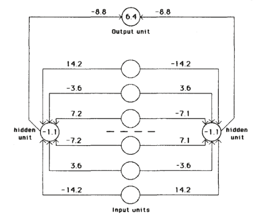

Backpropagation's famous paper showed a network building features no one designed
Its main demonstration was a kinship puzzle of twenty-four people, and the backward calculus it is remembered for inventing had been in print since the early 1970s.
Why this matters
Every deep neural network in use today is trained by the procedure this 1986 paper made famous. You have already seen the step it repeats: each weight moves a small way down its share of the error. What you have not seen is the four-page document that convinced the field this step could train networks with hidden layers, or what that document actually put on the page. By the end you will know the one result the paper was built to show, and how small the networks behind it were. You will also know how to tell the paper from the legend the field now tells about it. That legend usually gets two things wrong: who invented the algorithm, and whether the paper was later proved wrong about where training gets stuck.
- 01
- One gradient step drops the loss from 7.0 to 0.225: the weight-update step this lesson builds on, worked by hand on small numbers.
- 02
- A network's gradient is a product of local slopes chained backward: the calculus of the backward pass that back-propagation runs.
- 03
- AlexNet: the 2012 result that made this procedure the field's default.
What the four-page letter actually claimed
In the 9 October 1986 issue of Nature, David Rumelhart, Geoffrey Hinton, and Ronald Williams published a four-page letter titled “Learning representations by back-propagating errors.”1 Rumelhart and Williams were at the University of California, San Diego; Hinton, the corresponding author, was at Carnegie-Mellon. The letter describes what it calls “a new learning procedure, back-propagation, for networks of neurone-like units” that adjusts the connection weights to shrink the gap between the output a network gives and the output it was supposed to give.1
The step at the center of that procedure appeared already, in gradient descent: training moves each weight a little way down its share of the error. The 1986 letter is not mainly about that step. Its claim is about the layers that sit between a network's inputs and its outputs, the hidden units: units whose values the training sets, but which no one wires by hand to stand for anything in particular. The letter's stated result is that back-propagation makes those hidden units “come to represent important features of the task domain.”1 The network is handed inputs and correct outputs and nothing else, and the useful features in between are its own.
How small the demonstrations were
For all its later reach, the demonstration was small. The symmetry network the letter shows in full has six input units, two hidden units, and one output.1 Its task is to report whether a row of six values reads the same backward as forward. Learning it took 1,425 sweeps through all sixty-four possible inputs, with the weights adjusted once per sweep.1 The trained network is small enough to print every weight on the page.

The family-tree network was larger but still legible: thirty-six input units across five layers, trained for 1,500 sweeps on 100 of the 104 kinship triples.1 The companion chapter runs the paper's other test problems, the classic toy tasks of the field. Exclusive-or, the function Minsky and Papert had used against earlier networks, was solved with a single hidden unit in 558 sweeps. Four-bit parity took 2,825 pattern presentations. An eight-input network learned to squeeze eight patterns through three hidden units and reproduce them.2
| Network | Size | Task | Training |
|---|---|---|---|
| Symmetry | 6-2-1 | mirror symmetry of six inputs | 1,425 sweeps over 64 patterns |
| Family tree | 36 in, 5 layers | kinship triples | 1,500 sweeps, 100 of 104 triples |
| XOR | 2-1-1 | exclusive-or | 558 sweeps, one hidden unit |
| 4-bit parity | 4-4-1 | parity of four bits | 2,825 presentations |
What the papers never give is how long any of this took, or on what hardware.12 They count sweeps and pattern presentations, never seconds or machines. A network trained today learns from enormous datasets. The whole training set here was sixty-four inputs, or a hundred kinship triples, swept over and over until the weights stopped moving.
The algorithm predates the paper that made it famous
The paper is often remembered as the invention of back-propagation. Read against the record, that is wrong in both directions. The core operation, computing how every input affects an output by working backward through the steps of a calculation, was in print well before 1986. In 1976, Seppo Linnainmaa published a method for exactly this, tracking how rounding errors accumulate through an arbitrary numerical computation; his first-order coefficient, he wrote, “is the partial derivative” of one value with respect to another.3 He was analyzing rounding error and never mentioned neural networks, but the procedure is the backward pass. Two years earlier, Paul Werbos's 1974 Harvard thesis had set out “dynamic feedback,” which he called “a technique for calculating derivatives inexpensively, for use with the classic method of steepest descent.”4 Werbos framed it for fitting statistical models and named brains only as an analogy.
So did the 1986 authors overwrite the people who came before them? Read the two documents and the answer is no. In the Nature letter they write that variants of the procedure “have been discovered independently by David Parker” and by Yann Le Cun, both contemporaries.1 In the chapter they credit the underlying delta rule to Widrow and Hoff's 1960 work and again name Parker and Le Cun.2 What they did not do was cite Werbos or Linnainmaa. The plainest reading of that gap is not theft. Linnainmaa and Werbos had published in numerical analysis and in the behavioral sciences, and their work was not yet known in the connectionist corner of the field the 1986 authors were writing for. The miscrediting that later grew around the paper lives in popular memory, not in the paper's own text.
The fuller chronology reaches back further still, through control-theory work in the early 1960s, as the neural-network researcher Jürgen Schmidhuber has documented.5 Schmidhuber is himself a party to these priority disputes and argues a strong case for the predecessors, so read him as an advocate. On the split that matters he is careful: he credits the 1986 paper not with the algorithm but with the experimental demonstration that back-propagation yields useful internal representations.5 Linnainmaa owns the backward derivative, Werbos owns its use in steepest descent, and Rumelhart, Hinton, and Williams own the demonstration that, run on a network, it builds the kind of features the family-tree units showed.
How the paper's stated limits held up
The paper did not oversell itself. Rumelhart, Hinton, and Williams named its limits plainly. The most serious, they wrote, is that “the error-surface may contain local minima so that gradient descent is not guaranteed to find a global minimum.”1 A local minimum is a low point in the error that is not the lowest; a network that settles into one stops improving while a better set of weights exists somewhere else. The same sentence reports what they actually saw: “experience with many tasks shows that the network very rarely gets stuck in poor local minima.”1 The chapter puts it more strongly, calling the local-minimum problem “irrelevant in a wide variety of learning tasks.”2 They were as blunt about biology: the procedure, they wrote, “is not a plausible model of learning in brains.”1
Did later work prove them wrong about local minima? No, and this is where the legend most often misreads the record. In 2014, Yann Dauphin and five co-authors examined the error surfaces of neural networks in high dimensions and found that the thing which slows training is not poor local minima but saddle points: places where the surface falls away in some directions and rises in others.6 The genuine local minima, they showed, are rare, and the ones that exist sit at an error very close to the best possible.6 A critical point with high error is almost always a saddle, because in high dimensions “the chance that all the directions around a critical point lead upward is exponentially small.”6
That result corrects the paper's explanation while confirming its observation. Rumelhart, Hinton, and Williams had reported, from experiment, that their networks rarely got stuck. Dauphin and colleagues supplied the reason the 1986 authors could not: in a network with many weights, being trapped at a genuinely bad minimum requires every direction to point uphill at once, and that almost never happens. Their observation held. The explanation for it arrived twenty-eight years later.
The takeaway
The paper's importance is real, and it is a matter of demonstration, not invention. Its lasting result was not a new algorithm. The backward calculus was already in print, and the authors credited the contemporaries they knew of. On networks small enough to read every weight, Rumelhart, Hinton, and Williams showed that a simple rule for pushing weights downhill will make a network build its own useful features. The family-tree units had recovered nationality and generation from nothing but a list of relatives. They were careful about what they had not solved, and the local-minimum worry they flagged is the one later work most cleanly confirmed. That is how to tell the paper from the legend. It inherited the algorithm and earned its place by showing what the algorithm could build.
- 01
- Jürgen Schmidhuber, “Who Invented Backpropagation?”: his annotated priority record, back to 1960s control theory.
- 02
- Dauphin et al., “Identifying and attacking the saddle point problem”: the analysis that reframed the local-minimum worry as saddle points.
Sources
- Nature · Rumelhart, Hinton & Williams, “Learning representations by back-propagating errors” (1986)
- MIT Press · Rumelhart, Hinton & Williams, “Learning Internal Representations by Error Propagation,” in Parallel Distributed Processing, Vol. 1 (1986)
- BIT · Linnainmaa, “Taylor Expansion of the Accumulated Rounding Error” (1976)
- Harvard University · Werbos, “Beyond Regression: New Tools for Prediction and Analysis in the Behavioral Sciences,” Ph.D. thesis (1974)
- IDSIA · Schmidhuber, “Who Invented Backpropagation?”
- arXiv · Dauphin et al., “Identifying and attacking the saddle point problem in high-dimensional non-convex optimization” (2014)